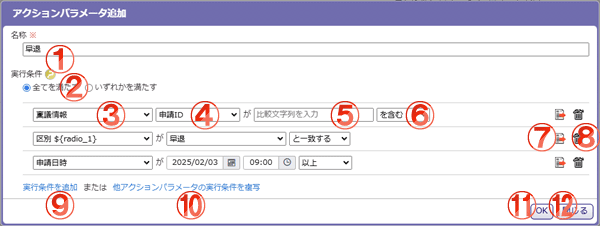

アクションパラメータの実行条件を登録・編集します。

機能説明
ヘルプアイコン実行条件についての説明を表示します。 |
実行条件区分ラジオ実行条件を「全てを満たす/いずれかを満たす」から選択します。 |
条件対象選択コンボ条件の対象を選択します。 |
条件対象詳細選択コンボ条件の対象の詳細を選択します。 |
比較対象コンボ/フォーム比較対象を選択/入力します。 |
比較条件選択コンボ比較条件を選択します。 |
複写アイコン実行条件を1行複写します。 |
削除アイコン実行条件を1行削除します。 |
実行条件を追加実行条件を1行追加します。 |
他アクションパラメータの実行条件を複写同じ連携APIに登録されているアクションパラメータの実行条件を1行選択し、複写します。 |
OKボタンアクションパラメータの名称と実行条件を登録・編集します。 |
閉じるボタンダイアログを閉じます。 |
表示・入力項目説明
名称
アクションパラメータの名称を入力します。（100文字以内）
実行条件
アクションパラメータの実行条件を設定します。